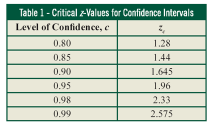
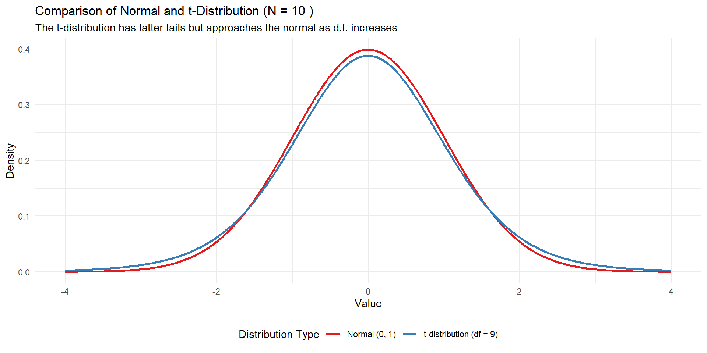
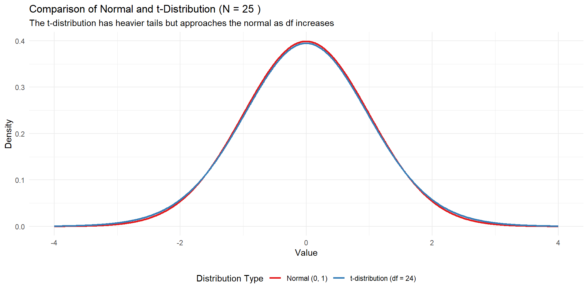
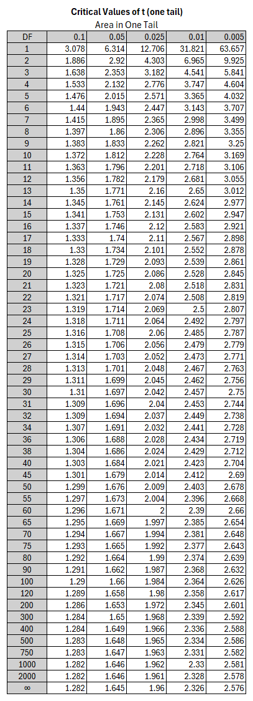
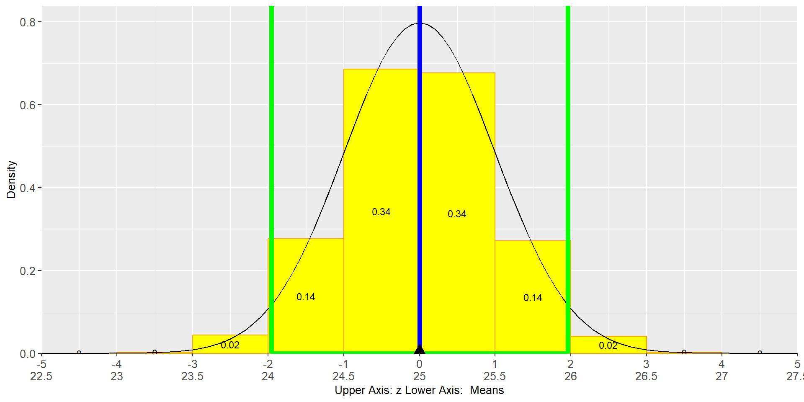

Confidence Interval
Data
CL: Copy data to clipboard as backup or use DataSample0
Mean
Change Sex=="m" to Sex=="f"! What happens?
Terminology
Confidence Interval & Margin of Error
Terminology
Confidence Interval & Margin of Error
z-Table

Confidence z-Table(use this for Hawkes and exams) \[\mbox{Note: } z_c=:z_{\alpha /2}\]

Example: Constructing a Confidence Interval
A college student researching study time collects data from a random sample of 250 college students on her campus and calculates that the sample mean is \(\bar x= 15.7\) hours per week.
If the margin of error (\(E\)) for her data using a 95% level of confidence is \(E = 0.6\) hours, construct a 95% confidence interval for her data. Interpret your results.
Example: Constructing a Confidence Interval
CI Lower Bound: \[CI_{Lower}=\bar x - E = 15.7 - 0.6 = 15.1\]
CI Upper Bound: \[CI_{Upper}=\bar x + E = 15.7 + 0.6 = 16.3\]
Confidence Interval \[CI=[15.7,16.3]\]
Interpretation The true mean study time is with a probability of 95% between \(15.1\) and \(16.3\)
Example: Calculating Mean, Margin of Error, and CI
Suicide Hotline
In order to estimate the number of calls to expect at a new suicide hotline, volunteers contact a random sample of \(N=36\) similar hotlines across the nation and find that the sample mean is \(\bar x=42.0\) calls per month. Construct a $95% $ confidence interval for the mean number of calls per month. Assume that the population standard deviation is known to be \(SD=6.5\) calls per month.
Example: Calculating Mean, Margin of Error, and CI
Suicide Hotline
Random Sample of \(N=36\)
Sample mean: \(\bar x=42.0\) calls per month. Confidence Level: \(95\%\) Population Standard Deviation is known: \(SD=6.5\) calls per month.
Steps
- Calculate Standard Error (\(SE\)) from Standard Deviation (\(SD\)): \(SE=\frac{SD}{\sqrt{N}}\)
- Find \(z_{\alpha/2}\) in the Confidence z-Table
- Calculate Margin of Error (\(E\)): \(E=z_{\alpha/2}\cdot SE\)
- Use Margin of Error to calculate CI: \[[\underbrace{\bar x - E}_{CI_{lower}}, \underbrace{\bar x + E}_{CI_{upper}}]\]
- Interpretation
Confidence z-Table \(\mbox{Note: } z_c=:z_{\alpha /2}\)
Executing the Steps
- \(SE=\frac{6.5}{\sqrt{36}}=1.08\)
- \(z_{0.05/2}=1.96\)
- \(E=1.96\cdot 1.08=2.12\)
- Confidence Interval: \[[\underbrace{42 - 2.12}_{CI_{lower}}, \underbrace{42 + 2.12}_{CI_{upper}}]=[39.88,44.12]\]
- The true mean is between \(40\) and \(44\) calls
Example: Determine Sample Size
Suicide Hotline
The CEO wants a confidence level of \(0.99\) and a margin of error of \(1\). Consequently, the sample size needs to be increased:
\[E=z_{\alpha /2}\cdot \frac{SD}{\sqrt{N}}\]
\[\sqrt{N}=\frac{z_{\alpha /2}\cdot SD}{E}\]
\[N=\left (\frac{z_{\alpha /2}\cdot SD}{E} \right )^2\]
\[N=\left (\frac{2.575\cdot 6.5}{1} \right )^2= 280\]
Confidence z-Table \(\mbox{Note: } z_c=:z_{\alpha /2}\)
Proportions
Example: Calculating Proportions, Margin of Error, and CI
Proportion Students Not Enough Parking
A survey of \(345\) University students found that \(301\) students think that there is not enough parking. Find the \(90\%\) confidence interval for the proportion of all universities students who think that there is not enough parking on campus.
Example: Calculating Proportions, Margin of Error, and CI
Proportion Students Not Enough Parking
Random Sample of \(N=345\)
Proportion: \(\hat p=\frac{301}{345}=0.872\)
Normal distributed? Yes: \(5<n \hat p= 345\cdot 0.872\) and \(5<n (1-\hat p)= 345\cdot 0.128\)
Confidence Level: \(90\%\)
Steps
- Calculate Standard Error (\(SE\)): \[SE=\sqrt{\frac{\hat p(1-\hat p)}{N}}\]
- Find \(z_{\alpha/2}\) in the Confidence z-Table
- Calculate Margin of Error (\(E\)): \(E=z_{\alpha/2}\cdot SE\)
- Use Margin of Error to calculate CI: \[[\underbrace{\hat p - E}_{CI_{lower}}, \underbrace{\hat p + E}_{CI_{upper}}]\]
- Interpretation
Confidence z-Table \(\mbox{Note: } z_c=:z_{\alpha /2}\)
Executing the Steps
- \(SE=\sqrt{\frac{0.872\cdot 0.128}{345}}=0.018\)
- \(z_{0.1/2}=1.645\)
- \(E=1.645\cdot 0.018=0.030\)
- Confidence Interval: \[[\underbrace{0.872 - 0.03}_{CI_{lower}}, \underbrace{0.872 + 0.03}_{CI_{upper}}]=[0.842,0.902]\]
- The true proportion of students (not enough parking) is between \(87\%\) and \(90\%\)
Note, proportions in %-pointsExample: Determine Sample Size
Proportion Students Not Enough Parking
The University President wants a margin of error of \(1\%\) (everything else the same). Consequently, the sample size needs to be increased:
\[E=z_{\alpha /2}\cdot \sqrt{\frac{\hat p(1-\hat p)}{N}}\]
\[\sqrt{N}=\frac{z_{\alpha /2}\cdot \sqrt{\hat p(1-\hat p)}}{E}\]
\[N=\frac{z_{\alpha /2}^2\cdot \hat p(1-\hat p)}{E^2}\]
\[N=\frac{1.645^2\cdot 0.872 \cdot 0.128}{0.01^2}=3020\]
Confidence z-Table \(\mbox{Note: } z_c=:z_{\alpha /2}\)
What if Standard Devaition Is Not Known But Estimated?
Standard Deviation Estimated from The Sample
In most practical cases, the Population Standard Deviation is unknown. Then it needs to be estimated as the Sample Standard Deviation.
As a consequence:
You must use the t-Distribution (use the t-Table) instead of using the z-Distribution (use the z-Table)
t-Distribution vs. Normal Distribution
If the Standard Deviation is not known and is estimated from the sample:
Normal Distribution changes to a t-Distribution
However, Normal Distribution and t-Distribution are very similar with the t-Distribution having fatter tails.
t-Distribution vs. Normal Distribution
\(N=10\), \(d.f.=9\), \(Mean=0\), \(SD=1\)

t-Distribution vs. Normal Distribution
\(N=25\), \(d.f.=24\), \(Mean=0\), \(SD=1\)

Example: Calculating Mean, Margin of Error, and CI
Average Age of College Students
Somebody wants to find the average age at a university with \(20,000\) students and surveys a group of \(100\) students. The mean of the sample is \(25\) and the Sample Standard Deviation is estimated as \(5\).
Design a confidence interval so that the chance that it contains the population mean (the average age of all the students of the university) is \(95\%\).
Example: Calculating Mean, Margin of Error, and CI
Average Age of College Students
Random Sample of \(N=100\)
Sample mean: \(\bar x=25\) years
Confidence Level: \(95\%\) (\(\alpha=0.05\) and \(\alpha /2=0.025\))
Sample Standard Deviation is estimated as \(SD=5\)
Steps
- Calculate Standard Error (\(SE\)) from Standard Deviation (\(SD\)): \(SE=\frac{SD}{\sqrt{N}}\)
- Find \(t_{\alpha/2}\) in the t-Table for Degree of Freedom
(\(d.f.=N-1\)) - Calculate Margin of Error (\(E\)): \(E=t_{\alpha/2}\cdot SE\)
- Use Margin of Error to calculate CI: \[[\underbrace{\bar x - E}_{CI_{lower}}, \underbrace{\bar x + E}_{CI_{upper}}]\]
- Interpretation
t-Table
Left Tail

Executing the Steps
- \(SE=\frac{5}{\sqrt{100}}=0.5\)
- \(t_{0.025}=1.984\)
(\(d.f.=100-1 \approx 100\)) - \(E=1.984\cdot 0.5=0.992\)
- Confidence Interval: \[[\underbrace{25 - 0.992}_{CI_{lower}}, \underbrace{25 +0.992}_{CI_{upper}}]=[24,26]\]
- The true mean is between \(24\) and \(26\) years
